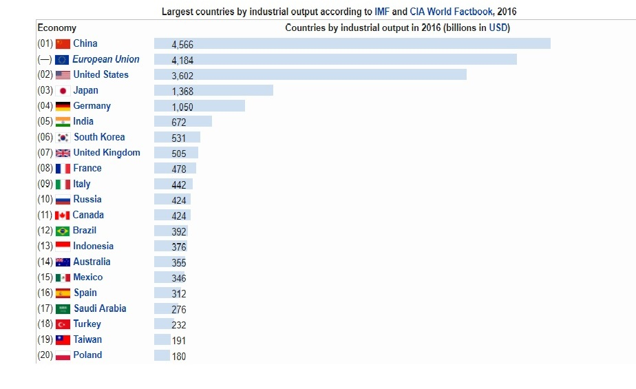

The textile industry in India traditionally, after agriculture, is the only industry that has generated huge employment for both skilled and unskilled labour in textiles. The textile industry continues to be the second-largest employment generating sector in India.
Industry is the production of goods or related services within an economy.The major source of revenue of a group or company is the indicator of its relevant industry.When a large group has multiple sources of revenue generation, it is considered to be working in different industries. Manufacturing industry became a key sector of production and labour in European and North American countries during the Industrial Revolution, upsetting previous mercantile and feudal economies. This came through many successive rapid advances in technology, such as the production of steel and coal.
